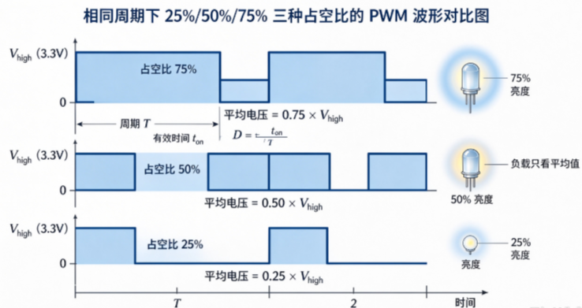
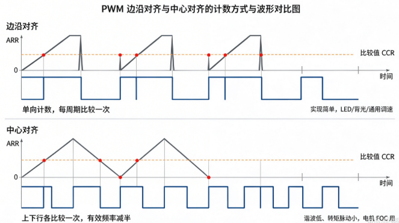
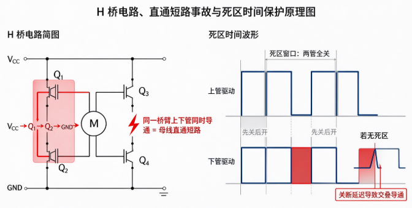

B-B.2.2 PWM 脉宽调制¶
所属章节：第五部 B. 总线协议 > B-B.2 基础外设接口
难度：[B] Beginner | 预计阅读时间：35 分钟
本节导读¶
GPIO 只能输出 0 和 1 两种状态。
PWM（Pulse Width Modulation，脉宽调制）用一串高低快速交替的方波，在数字引脚上合成出"模拟量"的效果：占空比 50% 的 3.3 V 方波，负载感受到的平均电压是 1.65 V。
LED 调光、LCD 背光、电机调速、舵机控制、蜂鸣器发声，都建立在这一个原理上。
本节默认读者没接触过定时器和电力电子，原理部分从零讲起，并在一开头划清责任线：波形生成是定时器硬件的活，软件从不手工翻转引脚——软件只负责算账和写参数，读懂原理是为了配得对、调得动。
本节覆盖：PWM 的原理与"平均值"的物理依据、工程落地要过的五关（极性、对齐方式、死区、分辨率、更新时机）、Linux PWM 子系统的完整使用路径——sysfs 调试接口、设备树三个现成驱动（产品路径）、内核 Consumer API（带可编译模块示例），以及背光、直流电机、舵机与蜂鸣器三个落地形态。
PWM 原理：数字引脚怎么合成"模拟量"¶
从一个呼吸灯说起¶
LED 接在 GPIO 上，只有亮和灭两档。
现在换一种玩法：让引脚以每秒 1000 次的频率快速地"亮 1 毫秒、灭 1 毫秒"循环。
LED 确实在疯狂闪烁，但你的眼睛看不出来——视觉暂留把亮灭平均掉了，你看到的是一颗半亮的 LED。
把"亮的时间"拉长到 3 毫秒、"灭的时间"缩短到 1 毫秒，LED 就变成四分之三亮度。LED 全程都只在亮和灭两个状态之间切换，但你得到了连续可调的亮度。
这就是 PWM 的全部原理：不改变电压幅值，只改变"有效时间"的占比，负载感受到的就是中间值。
形式化一下，三个量：
- 周期 T：一轮"亮+灭"的总时间，单位通常是微秒或纳秒。它的倒数是频率 f = 1/T, 上面那个例子 T=4 ms、f=250 Hz
- 占空比 D：一个周期里"有效电平"的时间占比，D = t_on / T，取值 0%~100%。上面第二个例子 D = 3ms/4ms = 75%
- 有效电平：负载"干活"的那个电平。LED 高电平点亮时，有效电平就是高
分辨率：占空比能调多细。由硬件定时器的计数能力决定，后文"分辨率与更新时机"一节专门算这笔账。

"负载只看平均值"的物理依据¶
平均电压 V_avg = D × V_high，这个公式为什么成立？因为真实负载都有"惯性"，跟不上、也不关心每一次瞬间跳变：
| 负载 | "惯性"是什么 | 平均效应的来源 |
|---|---|---|
| LED + 人眼 | 人眼视觉暂留约 1/24 秒 | 亮度感知是光通量的时间积分 |
| 直流电机 | 线圈电感阻碍电流突变 + 转子机械惯性 | 电流来不及跟随每次通断，转速正比于平均电流 |
| 加热片/电磁铁 | 热惯性、电磁惯性 | 功率按时间平均 |
所以 D=50% 的 3.3 V 方波，对负载而言等效于稳定的 1.65 V, 只要频率高到负载的惯性时间尺度之内看不出波动。
频率要"多高"，取决于负载的惯性有多大：电机惯性大，几 kHz 就够；人眼挑剔，背光要 20 kHz 以上。
这就是后文每个落地形态第一件事都是选频率的原因。
工程落地要过的五关¶
原理一句话就说完了，但写代码之前还有五个概念会咬人。
先给地图，后文逐个展开：
- 极性：哪种电平算"有效"——配反了，占空比调大灯反而变暗
- 对齐方式：硬件定时器怎么数出这个波形——边沿对齐够用，电机 FOC 要中心对齐
- 死区时间：用 PWM 驱动电机 H 桥时的安全机制——没有它，上电即烧管
- 分辨率：占空比最小能调多细——和频率在同一片时钟下是零和的
- 更新时机：软件改了参数，什么时候真正生效——改在周期中途会出畸形脉冲
软件视角：波形是硬件跑的，软件只下参数¶
上面说的"亮 1 毫秒、灭 1 毫秒"，不是软件写的循环——那是定时器硬件数出来的。软件读者最容易产生的误解是"PWM 是不是要开个线程/定时器中断不停翻转 GPIO"，先把责任线画清：
| 环节 | 谁负责 | 软件要做什么 |
|---|---|---|
| 波形生成（计数/比较/翻转） | PWM 控制器硬件（自动） | 无。配好参数后波形自己跑，CPU 零参与 |
| 频率 / 占空比 / 极性 | 软件配置 | sysfs 三件套 / 设备树 / Consumer API 设值 |
| 对齐方式 | 软件配置（控制器支持时） | 按负载选边沿或中心对齐 |
| 死区时间 | 软件配置（寄存器/设备树属性） | 从 MOSFET 关断延迟算出数值写进去 |
| 分辨率 | 硬件时钟 ÷ 频率的除法结果 | 配置前算清"步数 = 时钟 ÷ 频率"这笔账 |
| 更新时机 / 影子缓冲 | 硬件特性，改不了 | 查手册知道它，把更新安排在周期边界 |
| 占空比 → 亮度/转速/角度 | 负载的物理特性 | 业务层设目标值与加减速斜坡 |
软件的真实工作量集中在两处：算两笔账（频率-分辨率账、死区账）+ 写三组参数（period、duty_cycle、polarity）。这正是 PWM 相对"软件定时翻转 GPIO"的压倒性优势：波形一旦跑起来 CPU 完全不参与——既省 CPU，又没有调度抖动，频率可以做到软件翻转望尘莫及的 MHz 级。
第一关：极性¶
极性（polarity）定义哪种电平是"有效"的。
正极性（normal / Active High）：占空比指高电平的时间占比。D=75% 就是 75% 时间输出高电平。
负极性（inversed / Active Low）：占空比指低电平的时间占比。D=75% 变成 75% 时间输出低电平——同样一个 D，波形整体上下翻转。
为什么会有负极性这种东西？因为有些外设的"有效"就是低电平：共阳极接法的 LED 低电平点亮；某些电机驱动芯片的使能输入要求低电平有效。
PWM 控制器把极性做成可配置项，软件侧就不用自己拿 100% 去减。
⚠️ 极性配反的典型症状：占空比调大，亮度反而变暗。这个症状极具迷惑性——代码、接线、频率全是对的，就是逻辑反了。
排查 PWM 行为异常时，先确认外设数据手册要求的极性，再核对设备树pwms属性里的极性标志或 sysfs 的polarity文件。
第二关：边沿对齐与中心对齐¶
PWM 波形是定时器数出来的。计数器从 0 开始数，数到比较值（CCR）时翻转输出，数到自动重装值（ARR）时一个周期结束。
两种数法产生两种波形：
边沿对齐：计数器 0 → ARR 后瞬间归零，重新数。
每个周期只在上升计数时与 CCR 比较一次，脉冲靠一边排列。绝大多数应用用它：LED 调光、背光、通用调速，实现简单。
中心对齐：计数器 0 → ARR → 0，先向上数再向下数。
上行和下行各与 CCR 比较一次，脉冲以周期中点左右对称。代价是同样时钟下有效频率减半。
为什么电机控制要费这个劲？因为波形对称时，输出电流的纹波更小、转矩脉动更低。
无刷电机 FOC、H 桥逆变这类场景，转矩脉动直接表现为振动和噪声，值得为此付出频率减半的代价。
谐波：任何周期性方波都可以数学分解成一个基波（与 PWM 同频率）加上一系列整数倍频率的高频分量，这些高频分量就叫谐波。
谐波含量高的波形，EMI 辐射更强、电机电流纹波更大。中心对齐的波形对称，谐波结构更好——这是它在电机场景受宠的物理原因。
绝大多数 SoC 的片上 PWM 只支持边沿对齐；需要中心对齐时先确认控制器能力（RK3568 的 PWM 支持，具体见芯片手册 PWM 章节）。

第三关：互补输出与死区时间¶
这一节只在"用 PWM 驱动电机"时需要——但它事关烧板子，值得每个写 PWM 的人知道。
先讲半桥与 H 桥¶
GPIO/PWM 引脚只能输出几 mA，推不动电机（动辄几百 mA 到几 A）。工程上的解法是拿 PWM 去控制功率开关，让电源的大电流经开关流向电机。
最基本的功率开关单元是半桥：两个 MOSFET 上下串联在电源 VCC 与 GND 之间，中点引出接负载。上管导通，中点输出 VCC；下管导通，中点输出 GND——PWM 控制两个管子的通断，中点就输出了被"功率放大"的 PWM。
H 桥是两个半桥并排：电机接在两个中点之间。左中点高、右中点低，电流正向流过电机（正转）；反过来则反转。
TB6612、L298N 这类电机驱动芯片，内部就是 H 桥。
直通事故与死区¶
半桥有一条铁律：同一桥臂的上下两个 MOSFET 绝不能同时导通。
同时导通时，电流路径是 VCC → 上管 → 下管 → GND——不经过任何负载，电源直接短路（叫"直通"或 shoot-through），几十安培的瞬态电流足以在微秒级烧毁 MOSFET。
理论上只要严格"先关一个、再开另一个"就不会直通。但 MOSFET 的关断不是瞬时的：栅极电荷释放需要时间（关断延迟，几十到几百 ns），这段时间内它仍在导通。
所以控制器必须在切换时插入一段两管全关的安全窗口——这就是死区时间（dead time），典型取几百 ns 到几 μs，从 MOSFET 数据手册的关断延迟参数出发计算，留足裕量后用示波器核对两路波形无交叠。
与死区配套的是互补输出：PWM 控制器把一路 PWM 与其严格反相的 PWM̄ 成对输出（上管一路、下管一路），死区逻辑在硬件里自动插入，软件不用手工错开两路时序。
💡 注意责任分工：死区的插入动作是硬件自动完成的，但死区的数值是软件配的（寄存器或设备树属性）——而数值的依据在 MOSFET 数据手册里。这是又一个"软件配置项、硬件定数值"的典型。
⚠️ 死区两个方向都有代价。太短：关断延迟没被覆盖，两管交叠导通，直通烧管——这是硬件事故，不可恢复。
太长：两管全关的时间占比变大，有效输出时间被吃掉，表现为电机低速时转矩不足、效率下降。
从关断延迟数据出发计算，示波器核对，不要拍脑袋取值。

第四关：分辨率¶
占空比最小能调多细？不是想要多细就有多细。先看清硬件在干什么：
PWM 定时器内部就是一个计数器，每来一个时钟脉冲加 1。
输出波形靠两个寄存器切出来：
- 周期寄存器（ARR）：数到它就归零，重新开始——决定 PWM 频率
- 比较寄存器（CCR）：数到它就翻转电平——决定占空比 CCR 只能填整数，所以占空比最小调节粒度就是 1 个时钟周期占整个周期的比例： 例：100 MHz 定时器时钟，出 20 kHz PWM 同一片时钟把频率提到 200 kHz：
直觉理解：一个 PWM 周期里包含的时钟周期数，就是占空比能切出的份数。
定时器时钟不变时，频率与分辨率是零和的——想要频率高，每周期份数就少，占空比就粗。
所以背光这种需要细腻低亮段的场景，选频率时要把这笔账一起算：先把需要的最低占空比粒度换算成步数，确认定时器位数装得下（5000 步用 16 位计数器足够；若需要 100000 步就要 32 位或换时钟源），再定 PWM 频率。
💡 责任分工：计数和翻转是定时器硬件自动跑的；算"步数 = 时钟 ÷ 频率"这笔账是软件的——选型与配置前算清楚，配错了硬件照样跑，只是占空比粗得没法用。
第五关：更新时机¶
软件写寄存器改占空比，新值什么时候生效？多数控制器的周期/占空比寄存器带影子缓冲（shadow register）：写入的值先存进缓冲，等当前周期走完、下一个周期边界才切换过去——任何时刻输出的都是完整、合法的波形。
低成本控制器（包括部分 SoC 片上 PWM）没有缓冲，写入立即生效：周期中途把占空比从 20% 改成 80%，本周期剩余部分就按新值走，产出一个既不新也不旧的畸形脉冲。对 LED 无伤大雅，对电机驱动就是一次电流冲击。
动态调节场景（电机加速、呼吸灯渐变），先查手册确认所用控制器有没有影子缓冲；没有的话，软件侧把更新安排在周期边界——比如等比较匹配中断里写寄存器。
💡 影子缓冲是硬件特性，软件改不了它，只能知道它、配合它：有缓冲就随时写，没缓冲就等周期边界写。这是"硬件特性决定软件写法"的典型——和 ADC 的参考电压一样，属于软件无法修、只能绕的硬件事实。
Linux PWM 子系统¶
框架：pwmchip 与 pwm_state¶
内核 PWM 子系统把各厂控制器的差异收敛为统一抽象，两个核心概念：
- pwmchip：一个 PWM 控制器，管理若干通道，sysfs 下呈现为
/sys/class/pwm/pwmchipN/ - pwm_state：通道状态三元组——
period（周期，ns）、duty_cycle（有效电平时间，ns）、polarity+enabled。v6.6 内核中定义于include/linux/pwm.h:59
注意单位：Linux PWM 子系统全程使用纳秒，不是赫兹。20 kHz 要写 period = 50000（1s / 20kHz = 50μs = 50000ns）。这是 PWM 新手最常踩的单位坑。
调试路径：sysfs 接口¶
每个控制器导出一个目录，通道经 export 引出后可配：
/sys/class/pwm/pwmchip0/
├── npwm # 本控制器的通道数
├── export # 写通道号导出：echo 0 > export
└── pwm0/ ← export 后出现
├── period # 周期（ns）
├── duty_cycle # 有效电平时间（ns）
├── polarity # normal / inversed
└── enable # 1=输出，0=停止
完整操作流程（20 kHz、50% 占空比）：
echo 0 > /sys/class/pwm/pwmchip0/export # 导出通道 0，生成 pwm0/ 目录
echo 50000 > /sys/class/pwm/pwmchip0/pwm0/period # 周期 50μs = 20kHz
echo 25000 > /sys/class/pwm/pwmchip0/pwm0/duty_cycle # 占空比 25000/50000 = 50%
echo 1 > /sys/class/pwm/pwmchip0/pwm0/enable # 开始输出
cat /sys/class/pwm/pwmchip0/pwm0/{period,duty_cycle,enable,polarity} # 回读确认
⚠️ 写入顺序有约束：
duty_cycle不能超过period，否则返回-EINVAL（shell 里表现为 write error）。
改频率时的正确顺序是：先把占空比降到安全值 → 改周期 → 再重设占空比。
产品路径：设备树 + 现成驱动¶
和 GPIO 一章同样的原则：产品的常态功能走设备树 + 内核子系统，sysfs 是调试路径。
先看 PWM 控制器在设备树里的样子（RK3568，rk356x.dtsi:458）：
pwm0: pwm@fdd70000 {
compatible = "rockchip,rk3568-pwm", "rockchip,rk3328-pwm";
reg = <0x0 0xfdd70000 0x0 0x10>; // 寄存器块基址与长度
clocks = <&pmucru CLK_PWM0>, <&pmucru PCLK_PWM0>;
clock-names = "pwm", "pclk"; // 工作时钟与总线时钟
pinctrl-0 = <&pwm0m0_pins>; // 把引脚 MUX 拨到 PWM 功能
pinctrl-names = "default";
#pwm-cells = <3>; // 引用方要给 3 个参数
status = "disabled"; // dtsi 默认关，板级 dts 开启
};
#pwm-cells = <3> 表示引用方要给三个参数：通道号、周期（ns）、极性标志。
内核自带三个现成驱动，覆盖 PWM 最高频的三种用途，业务代码一行 PWM 都不用写：
LCD 背光——pwm-backlight 驱动（drivers/video/backlight/pwm_bl.c）：
backlight: backlight {
compatible = "pwm-backlight";
pwms = <&pwm0 0 50000 0>; // 控制器 通道 周期ns 极性
brightness-levels = <0 16 32 64 96 128 160 192 224 255>; // 非线性，见落地形态节
default-brightness-level = <5>;
status = "okay";
};
&pwm0 {
status = "okay"; // dtsi 默认 disabled，板级开启
};
注册后用户态经 /sys/class/backlight/backlight/brightness 调亮度（写 0~9 的级别索引），桌面系统和框架直接对接。
呼吸灯/状态灯——pwm-leds 驱动，接入 LED 子系统：
pwmleds {
compatible = "pwm-leds";
led_breath: led-breath {
label = "status:blue";
pwms = <&pwm0 0 50000 0>;
max-brightness = <255>;
};
};
之后 /sys/class/leds/status:blue/brightness 写 0~255 调亮度，配合 trigger 可实现呼吸效果。
蜂鸣器——pwm-beeper 驱动，把蜂鸣器注册为输入设备的音效输出，应用层发 EV_SND 事件控制鸣叫频率与时长。
驱动路径：内核 Consumer API（可编译示例）¶
标准负载之外的场合（自定义驱动里要控制 PWM），用内核 Consumer API。
下面是一个最小但完整可编译的内核模块：probe 时把通道配成 20 kHz/50%，卸载时关闭输出（API 用法已对 v6.6 include/linux/pwm.h 核对）：
/* pwm_demo.c — PWM Consumer API 最小完整内核模块 */
#include <linux/module.h> /* 模块基础设施：MODULE_LICENSE 等 */
#include <linux/platform_device.h> /* platform_driver 框架（第 11 章） */
#include <linux/pwm.h> /* PWM Consumer API */
static int pwm_demo_probe(struct platform_device *pdev)
{
struct pwm_device *pwm;
struct pwm_state state;
/* 从本节点的 pwms 属性取 PWM 通道；第二参数 NULL = 取列表第一个。
* devm_ 前缀：驱动卸载时内核自动释放引用，不用手动 pwm_put() */
pwm = devm_pwm_get(&pdev->dev, NULL);
if (IS_ERR(pwm))
/* dev_err_probe：打印错误并返回错误码；若 PWM 控制器尚未就绪，
* 返回 -EPROBE_DEFER，内核会稍后重新执行本 probe */
return dev_err_probe(&pdev->dev, PTR_ERR(pwm),
"devm_pwm_get failed\n");
platform_set_drvdata(pdev, pwm); /* 存起来，remove 时要用 */
pwm_get_state(pwm, &state); /* 读当前状态：设备树 pwms 里的周期/极性在这里 */
state.period = 50000; /* 周期，纳秒：50000 ns = 20 kHz */
state.duty_cycle = 25000; /* 有效电平时间，纳秒：占空比 = 25000/50000 = 50% */
state.enabled = true; /* 打开输出 */
/* 内部有 mutex，可能睡眠——只能进程上下文调用。
* v6.8 起更名 pwm_apply_might_sleep()，语义相同，跨版本移植注意 */
return pwm_apply_state(pwm, &state);
}
static void pwm_demo_remove(struct platform_device *pdev)
{
struct pwm_device *pwm = platform_get_drvdata(pdev); /* 取回 probe 存的指针 */
struct pwm_state state;
pwm_get_state(pwm, &state);
state.enabled = false; /* 卸载前关闭输出，引脚停止发波 */
pwm_apply_state(pwm, &state);
}
/* 与设备树 compatible 配对 */
static const struct of_device_id pwm_demo_of_match[] = {
{ .compatible = "demo,pwm-out" },
{ }
};
MODULE_DEVICE_TABLE(of, pwm_demo_of_match); /* 让模块加载时带上匹配表 */
static struct platform_driver pwm_demo_driver = {
.probe = pwm_demo_probe,
.remove = pwm_demo_remove,
.driver = {
.name = "pwm-demo",
.of_match_table = pwm_demo_of_match,
},
};
module_platform_driver(pwm_demo_driver); /* 模块 init/exit 一行搞定 */
MODULE_LICENSE("GPL");
MODULE_DESCRIPTION("PWM consumer API demo");
配套设备树节点（板级 dts）：
pwm_out: pwm-out {
compatible = "demo,pwm-out"; // 与驱动的 of_match 配对
pwms = <&pwm0 0 50000 0>; // 控制器 通道 周期ns 极性
};
&pwm0 {
status = "okay";
};
编译（Makefile 就一行 obj-m += pwm_demo.o）：
# 交叉编译：指向你的内核源码树（与板子运行的内核配置一致）
make -C ~/kernel/linux-6.6 M=$PWD ARCH=arm64 CROSS_COMPILE=aarch64-linux-gnu- modules
# 生成 pwm_demo.ko，拷贝到板子 insmod；probe 跑起来后示波器可见 20kHz 方波
三个落地形态¶
LCD 背光¶
背光为什么用 PWM 调亮度而不是调电流？
因为 LED 的色温随电流漂移，调电流会偏色；PWM 调光让 LED 始终工作在额定电流、只改变点亮时间占比，颜色稳定。
频率的约束来自两条。
- 下限：人眼对 60 Hz 以下的闪烁明显不适，几百 Hz 到几 kHz 时敏感人群仍有感知，手机相机对着屏幕还会拍出滚动条纹（相机的逐行曝光与 PWM 周期互相干涉）；所以背光 PWM 取 ≥20 kHz，超出人眼与常见相机的感知范围。
- 上限：驱动芯片的开关损耗随频率上升，发热加剧。
另一个容易踩的坑是线性占空比 ≠ 线性亮度：人眼对亮度的感知是对数式的——低亮段 1% 到 2% 的变化很刺眼，高亮段 80% 到 90% 几乎无感。
所以设备树里 brightness-levels = <0 16 32 64 96 128 160 192 224 255> 不是均匀取点，而是低亮段密、高亮段疏，让"级别+1"的体感变化均匀。
直流电机调速¶
电机经 H 桥驱动芯片（TB6612 类）接 PWM。
以 TB6612 为例，每路电机三个控制脚：PWM 脚接 SoC 的 PWM 输出控速度，IN1/IN2 两个 GPIO 控方向（10 正转、01 反转、00 刹车）。
速度归 PWM 子系统管，方向归 GPIO 子系统管——这正是前两章合起来的用法。
频率选型：
- 低于 10 kHz 时，PWM 通断在线圈上产生的电流脉动会带动绕组机械振动，频率落在人耳范围，表现为高频啸叫；
- 频率过高则 MOSFET 每秒开关次数增多，开关损耗上升、驱动芯片发热。
- 折中区间 10~20 kHz。
转速突变对驱动器和机械结构都是冲击，控制侧把占空比的阶跃变成斜坡（加减速曲线）。
用调试路径就能演示：
# 占空比从 20% 斜坡升到 80%，每步 1%（500ns/50000ns），间隔 50ms
for d in $(seq 10000 500 40000); do
echo $d > /sys/class/pwm/pwmchip0/pwm0/duty_cycle
sleep 0.05
done
舵机与蜂鸣器¶
舵机是特例中的特例：它的频率由协议规定死——50 Hz（周期 20 ms），角度由脉宽决定（0.5 ms≈0°、1.5 ms≈90°、2.5 ms≈180°，具体范围以舵机手册为准）。换算到 sysfs：period 写 20000000，duty_cycle 在 500000~2500000 之间调。
无源蜂鸣器本身是个扬声器：频率决定音调（440 Hz 是标准音 A），占空比固定 50% 即可。要发声就 enable、要换调就改 period。有源蜂鸣器内部自带振荡电路，给电就响，用 GPIO 开关即可，不要接 PWM。
调试与排查¶
常用命令：
ls /sys/class/pwm/ # 所有控制器
cat /sys/class/pwm/pwmchip0/npwm # 通道数
cat /sys/class/pwm/pwmchip0/pwm0/{period,duty_cycle,enable,polarity}
dmesg | grep -i pwm
💡 没有硬件也能练：内核
CONFIG_PWM_SIM（pwm-sim 模块，drivers/pwm/pwm-sim.c）可虚拟出 PWM 控制器，上述 sysfs 全流程在 PC 虚拟环境原样可练，详见内核文档Documentation/testing/pwm-sim.rst。
PWM 无输出时，第一排查手段是核对四件事：控制器 status 是否 "okay"、pinctrl 是否把引脚复用到 PWM 功能、sysfs 三件套（period/duty_cycle/enable）是否生效、gpioinfo 确认引脚没有被当 GPIO 占用。
四项全对仍无波形，再上示波器量引脚——量到波形异常（过冲、振铃）是布线/吸收问题，量不到任何波形则是复用或时钟问题。其中"pinctrl 没配、引脚还在 GPIO 模式"是现场最高频的根因。
本节总结¶
PWM 的全部原理一句话：负载有惯性，只看平均值，占空比就是那个"模拟量"。
工程上拦住人的是五笔账——极性账（配反则逻辑整体反转，症状极具迷惑性）、对齐账（边沿对齐够用，中心对齐留给电机 FOC）、死区账（H 桥直通是烧管事故，死区从 MOSFET 关断延迟算起）、分辨率账（频率与时钟零和，步数 = 时钟 ÷ 频率）、更新账（无影子缓冲的控制器，周期中途改写出畸形脉冲）。
Linux 侧的路径规整：sysfs 四文件全程纳秒、写入守 duty ≤ period 约束，是调试路径；产品的常态功能走设备树——背光 pwm-backlight、状态灯 pwm-leds、蜂鸣器 pwm-beeper，业务代码零 PWM；自定义驱动走 Consumer API，三行配置搞定周期/占空比/使能。
排障锚点记住四查——status、pinctrl、sysfs 三件套、GPIO 占用，其中 pinctrl 没配是现场最高频根因。
本节自查（面试问答）¶
先自答再点开对答案；答不上来的回正文补。
原理与五关¶
Q1. GPIO 只能输出 0 和 1，PWM 是怎么让 LED 半亮的？
让引脚以远超负载响应能力的速度在亮灭间快速切换。LED 确实在疯狂闪烁，但人眼视觉暂留把亮灭平均掉了，看到的是按占空比折算的亮度。PWM 不改变电压幅值，只改变有效时间占比——负载有惯性（人眼积分、电感阻碍电流突变、机械惯性），感受到的是平均效果：V_avg = D × V_high。
Q2. 背光要 20 kHz，电机 10 kHz 就够，频率下限到底由什么决定？
由负载"惯性"的大小决定：惯性小（人眼对光）就要高频率才看不出波动；惯性大（电机电感+转子）几 kHz 就平滑。每个落地形态第一件事选频率，选的都是"负载看不出波动"与"开关损耗可接受"的交点。
Q3. 占空比调大，灯反而变暗，代码接线频率全对，哪错了？
极性配反了。正极性下占空比指高电平占比，负极性指低电平占比——配反后逻辑整体反转。先查外设手册要求的极性（共阳 LED、低电平有效的驱动芯片都要求负极性），再核对设备树极性标志或 sysfs polarity。
Q4. 边沿对齐和中心对齐的区别是什么？电机 FOC 为什么要后者？
计数方式不同：边沿对齐 0→ARR 归零、每周期比较一次，脉冲靠一边；中心对齐 0→ARR→0、上下行各比较一次，脉冲以中点对称，代价是有效频率减半。对称波形的谐波结构好、电机电流纹波与转矩脉动小——FOC 场景转矩脉动直接表现为振动噪声，值得付这个代价。
Q5. H 桥驱动电机，为什么上电就烧管子？
同一桥臂上下管同时导通了：电流路径 VCC→上管→下管→GND，不经过负载，电源直通短路。诱因是 MOSFET 关断有延迟（几十到几百 ns），"先关后开"的理想时序实际会交叠。解法是死区时间：切换时插入两管全关窗口（几百 ns~几 μs），从关断延迟数据算出、示波器核对无交叠。
Q6. 死区时间长了点，安全裕量大不好吗？
太长有代价：两管全关时间占比变大，有效输出时间被吃掉，电机低速转矩不足、效率下降。太短直通烧管（不可恢复），太长性能受损——从 MOSFET 手册的关断延迟出发计算，不是拍脑袋。
Q7. 100 MHz 时钟出 20 kHz PWM，占空比能调多细？客户说要 200 kHz 呢？
步数 = 时钟 ÷ 频率 = 100M/20k = 5000 步 ≈ 12.3 bit，粒度 0.02%。提到 200 kHz 只剩 500 步 ≈ 9 bit，粒度 0.2%——频率与分辨率在同一片时钟下零和，要细腻还是要高频，先算这笔账。
Q8. 程序跑着跑着改占空比，示波器上偶尔出现一个畸形脉冲，为什么？
控制器没有影子缓冲：写寄存器立即生效，周期中途改值，本周期剩余部分按新值走，产出既不新也不旧的脉冲。有缓冲的控制器在周期边界才切换。解法：查手册确认；无缓冲就把更新安排在周期边界（如比较匹配中断里写）。
Linux 侧¶
Q9. 20 kHz 在 sysfs 里怎么写？写错了会怎样？
Linux PWM 子系统全程纳秒：period 写 50000。把频率当单位写 20000 是最常见的新手坑——得到的不是 20 kHz 而是 50 MHz 周期（根本不出波或异常）。另一约束：duty_cycle ≤ period，违反返回 -EINVAL，改频率要先降占空比、改周期、再重设。
Q10. PWM 完全没波形，按什么顺序查？
四查：控制器 status 是否 "okay"；pinctrl 是否把引脚复用到 PWM 功能；sysfs 三件套（period/duty_cycle/enable）是否生效；gpioinfo 确认引脚没被当 GPIO 占用。最高频根因是 pinctrl 没配、引脚还在 GPIO 模式。四项全对再上示波器：有波形但异常是布线问题，无任何波形是复用或时钟问题。
Q11. 产品的 LCD 背光要写 PWM 代码吗？
不写。设备树挂 pwm-backlight 驱动（pwms + brightness-levels 两个属性），用户态经 /sys/class/backlight/backlight/brightness 调级别。亮度级别表按人眼对数感知取点：低亮段密、高亮段疏，线性取点会导致低亮段刺眼、高亮段无感。
Q12. TB6612 驱动直流电机，SoC 侧要动哪两个子系统？
PWM 子系统管速度（PWMA 脚，10~20 kHz 防啸叫与过热），GPIO 子系统管方向（IN1/IN2：10 正转、01 反转、00 刹车）。转速突变有冲击，占空比按斜坡步进（每步 1%、间隔 50ms 的加减速曲线）。
Q13. pwm_apply_state() 为什么不能在中断里调？
它内部有 mutex，可能睡眠——v6.8 起干脆更名 pwm_apply_might_sleep() 把这一点写进名字。中断/原子上下文禁止睡眠，只能在进程上下文（probe、sysfs 回调、工作队列）调用。
Q14. 舵机接 PWM，period 和 duty_cycle 怎么填？
协议规定 50 Hz：period 写 20000000（20 ms）；角度由脉宽决定，duty_cycle 在 500000~2500000 ns（0.5~2.5 ms）之间调，1.5 ms 居中。频率是协议规定值，不能按"啸叫/频闪"思路自选。
下一步¶
PWM 解决的是"数字控制模拟量"，反方向的问题是把模拟信号读进来——温度、电池电压、光照强度。
下一节 B-B.2.3 ADC 模数转换，讲 SAR 型 ADC 的采样原理与 Linux IIO 子系统。
到 B-B.2.5 实战篇，GPIO 按键、PWM 呼吸灯、ADC 采集将合并为一个完整的产品级代码案例。
💡 螺旋衔接：本节的 Consumer API 是"用 PWM"，PWM 控制器驱动（pwm_chip 注册、
->apply实现）的写法归 D 扩展子系统篇；呼吸灯与按键的端到端组合归 B-B.2.5。